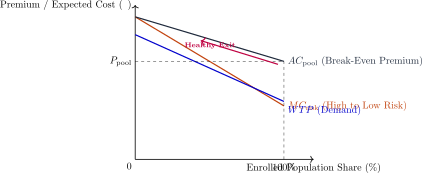
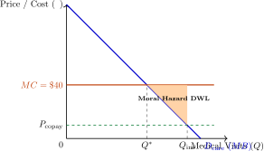
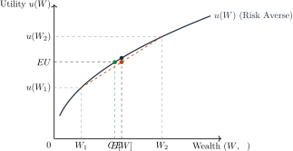

13 Chapter 13: Asymmetric Information, Risk, and Market Design
This chapter examines how hidden information and uncertainty reshape market outcomes and contract design. It develops three core frameworks: adverse selection, signaling, and screening; moral hazard, principal-agent incentives, and cost-sharing contracts; and expected value, risk aversion, and expected utility. Each section progresses from plain-English intuition to coordinate geometry, algebra-first problem solving, and an optional calculus extension.
13.1 Adverse Selection, Signaling, and Screening
Conceptual Introduction
Standard supply-and-demand models assume that buyers and sellers share the exact same information about product quality. In many real-world markets—used cars, health insurance, bank loans, and job hiring—one side possesses private knowledge that the other side cannot directly observe. Economists call this imbalance asymmetric information, and it generates two distinct market failures depending on when the hidden information arises:
- Adverse Selection (Hidden Characteristics Before a Contract): When sellers or applicants know their private quality or risk type before signing a contract, uninformed buyers offer a single pooled price based on average expected quality. High-quality sellers (or low-risk, healthy insurance applicants) find that pooled price unattractive and exit the market—lowering average quality further and causing the market to unravel (George Akerlof’s classic 1970 ``Market for Lemons’’ model).
- Signaling and Screening: Markets counter adverse selection through two complementary mechanisms. Signaling occurs when the informed party takes a costly, credible action to reveal high quality—such as a used-car dealer offering a 3-year factory powertrain warranty or a job candidate earning a rigorous degree. To separate high types from low types, a signal must be significantly less costly for high-quality sellers (or high-productivity workers) to provide than for low-quality types. Screening occurs when the uninformed party designs a menu of contract options or verification tests—such as an insurer offering high-deductible versus low-deductible plans, or a lender checking credit histories—to induce hidden types to reveal themselves.
Students frequently confuse the two classic asymmetric-information failures. Keep the timeline straight: adverse selection happens before a contract is signed because of hidden characteristics (for example, a buyer cannot tell whether a used car is a reliable peach'' or a defectivelemon,’’ or an insurer cannot observe an applicant’s private health risk). Moral hazard happens after a contract is signed because of hidden actions (for example, an insured driver taking fewer precautions once covered). Both stem from private information, but they require different market remedies.
Visual Representation
Figure 1 illustrates adverse selection in a competitive health insurance market, assuming enrollees are ordered from highest expected medical cost (left) to lowest expected medical cost (right) and every risk-averse individual values coverage above their own expected cost (\(WTP > MC_{\text{risk}}\) everywhere). Because full enrollment maximizes social welfare, insuring \(100\%\) of the population is socially efficient. Yet if insurers cannot observe individual risk and charge a single break-even pooled premium \(P_{\text{pool}} = AC_{\text{pool}}(100\%)\), low-risk individuals on the right face a premium above their willingness to pay (\(P_{\text{pool}} > WTP\)) and drop out. As healthier enrollees exit, average pool costs climb until the market settles at a smaller equilibrium \(E_{\text{AS}}\) (\(WTP = AC_{\text{pool}}\)), leaving low-risk consumers inefficiently uninsured.

MC_{\text{risk}}), so 100% enrollment is socially efficient. At the single pooled break-even price P_{\text{pool}}, low-risk enrollees exit (WTP < P_{\text{pool}}), driving average costs up until equilibrium stops at E_{\text{AS}} (Q_{\text{eq}} = 40%) and creating deadweight loss (shaded amber region).">Private used-car markets suffer acutely from adverse selection: because an owner knows far more about a vehicle’s accident and maintenance history than a prospective buyer, skeptical buyers discount every used car toward ``average’’ quality. Owners of reliable, well-maintained vehicles then refuse to sell at that discounted price, leaving a disproportionate share of problem cars on the market.
Automakers and dealerships overcome this information gap by combining signaling and screening:
- Credible Signaling (CPO Warranties): Through Certified Pre-Owned (CPO) programs, dealers back inspected vehicles with multi-year factory powertrain warranties. A warranty is a credible signal precisely because it is cheap to honor on a genuinely reliable car but prohibitively expensive to honor on a defective ``lemon.’’
- Buyer Screening (Inspections and History Reports): Uninformed buyers simultaneously screen vehicles by requiring third-party mechanical inspections and vehicle history reports, narrowing the information gap before money changes hands.
Together, credible signals and independent verification allow high-quality sellers to earn prices above their reservation values, preventing the market from unraveling.
Mathematical Foundation (Algebra Level)
Under pooled pricing with asymmetric information, risk-neutral uninformed buyers offer at most the probability-weighted expected value across the types remaining in the market:
\[ E[V] = p_H V_H + p_L V_L \qquad (p_H + p_L = 1) \]
where \(p_H\) and \(p_L\) denote the shares of high-quality and low-quality units offered for sale, and \(V_H\) and \(V_L\) denote buyers’ valuations of each type. High-quality sellers stay in the market only if the pooled offer \(E[V]\) meets or exceeds their seller reservation value \(R_H\) (\(E[V] \ge R_H\)).
Problem: In a used-car market with risk-neutral buyers, \(50\%\) of cars are high-quality (peaches'') worth $\$12{,}000$ to buyers (and $\$10{,}500$ to current owners), and $50\%$ are low-quality (lemons’’) worth \(\$6{,}000\) to buyers (and \(\$5{,}000\) to current owners). Buyers cannot distinguish peaches from lemons before purchase.
- Compute the maximum pooled price uninformed buyers are willing to pay if all cars are offered for sale.
- Determine which cars actually get sold and what the final equilibrium price becomes.
- What minimum share of peaches (\(p_H\)) would be required for both peaches and lemons to trade in a pooled market?
Step-by-Step Solution:
- Compute Initial Pooled Willingness to Pay (\(E[V]\)):
\[ E[V] = 0.50(\$12{,}000) + 0.50(\$6{,}000) = \$6{,}000 + \$3{,}000 = \mathbf{\$9{,}000} \]
Compare Pooled Offer (\(\$9{,}000\)) Against Seller Reservation Values:
Peach owners value their cars at \(\$10{,}500 > \$9{,}000\), so all peach owners withdraw from the market.
Lemon owners value their cars at \(\$5{,}000 < \$9{,}000\), so only lemons remain offered for sale.
Recognizing that \(100\%\) of remaining cars are lemons (\(p_H = 0\), \(p_L = 1\)), buyers revise their maximum willingness to pay downward to \(\mathbf{\$6{,}000}\).
- Solve for the Minimum Share of Peaches (\(p_H\)) Needed to Prevent Unraveling: Peaches remain in the pool only if \(E[V] \ge \$10{,}500\). Using \(p_L = 1 - p_H\):
\[ p_H(\$12{,}000) + (1 - p_H)(\$6{,}000) \ge \$10{,}500 \]
\[ \$6{,}000 + \$6{,}000\,p_H \ge \$10{,}500 \implies \$6{,}000\,p_H \ge \$4{,}500 \implies p_H \ge \frac{4{,}500}{6{,}000} = \mathbf{0.75\ (75\%)} \]
Conclusion: At a \(50/50\) mix, asymmetric information drives every high-quality vehicle out of the market, collapsing trade to lemons only at \(\$6{,}000\)—even though peach buyers value peaches by \(\$1{,}500\) more than peach owners do. Without signaling or screening, a pooled market survives only when at least \(75\%\) of offered cars are peaches.
Note for Economics Majors and Quantitative Students: In the continuous insurance model of Figure 1, let enrollees be indexed by \(q \in [0, Q_{\max}]\) from highest to lowest marginal expected cost, so \(MC'(q) < 0\). Total cost for the top \(q\) enrollees is \(TC(q) = \int_0^q MC(t)\,dt\), and average cost is:
\[ AC(q) = \frac{1}{q}\int_0^q MC(t)\,dt \]
Because \(MC(t)\) is strictly decreasing, every infra-marginal enrollee (\(t < q\)) is costlier than the marginal enrollee at \(q\), implying \(AC(q) > MC(q)\) for all \(q > 0\). Consequently, the competitive break-even equilibrium (\(WTP(q_{\text{eq}}) = AC(q_{\text{eq}})\)) lies strictly to the left of the socially efficient allocation (\(WTP(q^*) = MC(q^*)\)), generating deadweight loss \(\text{DWL} = \int_{q_{\text{eq}}}^{q^*} [WTP(t) - MC(t)]\,dt\).
In a separating signaling model (such as warranties or education level \(s\)), a signal successfully separates high types (\(H\)) from low types (\(L\)) only if marginal signaling cost is lower for high types (\(c_H'(s) < c_L'(s)\), the single-crossing condition) and the chosen signal level \(s^*\) satisfies \(c_H(s^*) \le V_H - V_L < c_L(s^*)\).
13.2 Moral Hazard and Incentive Design
Conceptual Introduction
While adverse selection occurs before a contract is signed, moral hazard occurs after a transaction when one party’s hidden actions cannot be fully observed or verified by the other party. Whenever an insurance policy, government bailout, or flat fixed salary shields a person from the full financial consequences of their choices, they face weaker marginal incentives to take costly precautions or exert high effort.
For example, a driver with zero-deductible comprehensive auto insurance may park in riskier neighborhoods or drive slightly less cautiously than an uninsured driver, and a homeowner with subsidized full flood insurance may build in a coastal floodplain. The same hidden-action problem arises inside firms as the principal-agent problem: when a principal (such as shareholders or a store owner) hires an agent (such as a corporate executive or sales clerk) whose daily effort cannot be perfectly monitored, a pure flat wage gives the agent little direct financial incentive to go above and beyond.
To mitigate moral hazard while still delivering valuable risk protection, insurers and employers design incentive-compatible contracts using three main tools:
- Deductibles: Requiring the insured to pay the first \(\$500\) or \(\$1{,}000\) of any claim before coverage begins.
- Co-payments and Coinsurance: Splitting ongoing bills through a flat per-visit fee (co-payment) or a percentage share of costs above the deductible (coinsurance).
- Performance-Linked Compensation: Aligning agent effort with principal outcomes via sales commissions, piece rates, bonuses, or stock grants.
Despite the word ``moral,’’ economists do not use moral hazard to accuse policyholders or workers of fraud or dishonesty. Moral hazard is a predictable behavioral response to a lower out-of-pocket marginal price. Moreover, eliminating moral hazard completely (by removing insurance) is not optimal: contract design always balances a fundamental trade-off between risk sharing and incentives. Higher deductibles and coinsurance strengthen incentives to take care, but they also expose risk-averse households to larger financial shocks.
Visual Representation
Figure 2 illustrates moral hazard in healthcare utilization using an illustrative linear demand curve \(P = 100 - 2Q\) and a constant marginal resource cost of \(MC = \$40\) per medical visit (holding patient health status constant, ceteris paribus). If patients pay the full resource cost of \(\$40\) per visit, they choose the socially efficient quantity \(Q^* = 30\) visits, where marginal benefit equals marginal cost (\(MB = MC\)). When health insurance lowers the patient’s out-of-pocket price to a co-payment of \(P_{\text{copay}} = \$10\), patients expand visits to \(Q_{\text{ins}} = 45\). For every additional visit between \(30\) and \(45\), the true resource cost (\(\$40\)) exceeds the patient’s marginal benefit (\(MB < \$40\)), generating a moral hazard deadweight loss of \(\$225\).

MB), creating the shaded amber deadweight loss triangle of $225.">Auto insurers rarely sell zero-deductible collision policies because even a modest \(\$500\) or \(\$1{,}000\) deductible forces drivers to keep ``skin in the game.’’ Paying the first dollar of minor scrapes preserves strong incentives to drive attentively and avoid fender-benders, while the policy still shields households against a catastrophic \(\$30{,}000\) crash.
Health insurance plans layer deductibles, coinsurance, and annual out-of-pocket maximums to balance this same trade-off:
- Routine Care (High Moral Hazard Risk): Deductibles and co-payments discourage unnecessary low-value visits where \(MC > MB\).
- Catastrophic Illness (High Financial Risk): Once a patient hits their annual out-of-pocket cap, the insurer pays \(100\%\) of remaining covered expenses—preventing medical bankruptcy when risk sharing matters most.
Similarly, employers address the principal-agent problem by pairing a reliable base salary (protecting risk-averse workers from uncontrollable income swings) with performance bonuses or equity grants (preserving incentives for high effort).
Mathematical Foundation (Algebra Level)
With a deductible \(D\) and a coinsurance rate \(c\) (the fraction paid by the insured above the deductible), a policyholder’s out-of-pocket cost on any covered loss \(L > D\) is:
\[ \text{Out-of-Pocket Payment} = D + c(L - D), \qquad \text{Insurer Payout} = (1 - c)(L - D) \]
For a linear demand curve and constant marginal cost \(MC\) as in Figure 2, the moral hazard deadweight loss from lowering out-of-pocket price to \(P_{\text{copay}} < MC\) is the area of the overutilization triangle:
\[ \text{DWL}_{\text{MH}} = \frac{1}{2}(Q_{\text{ins}} - Q^*)(MC - P_{\text{copay}}) \]
Checking Figure 2 with \(P = 100 - 2Q\), \(MC = \$40\), and \(P_{\text{copay}} = \$10\): setting \(100 - 2Q^* = 40\) gives \(Q^* = 30\), and setting \(100 - 2Q_{\text{ins}} = 10\) gives \(Q_{\text{ins}} = 45\), yielding \(\text{DWL}_{\text{MH}} = \frac{1}{2}(45 - 30)(\$40 - \$10) = \frac{1}{2}(15)(\$30) = \$225\).
Problem: A homeowner compares two property insurance policies against a potential \(\$10{,}000\) storm damage claim:
- Plan A: \(\$1{,}000\) deductible plus \(20\%\) coinsurance above the deductible.
- Plan B: \(\$2{,}500\) deductible with \(0\%\) coinsurance above the deductible.
Calculate the homeowner’s total out-of-pocket payment and the insurer’s payout under each plan if a \(\$10{,}000\) loss occurs.
Step-by-Step Solution:
- Evaluate Plan A (\(D = \$1{,}000\), \(c = 0.20\)): First compute the loss above the deductible: \(L - D = \$10{,}000 - \$1{,}000 = \$9{,}000\).
\[ \text{Out-of-Pocket}_A = \$1{,}000 + 0.20(\$9{,}000) = \$1{,}000 + \$1{,}800 = \mathbf{\$2{,}800} \]
\[ \text{Insurer Payout}_A = \$10{,}000 - \$2{,}800 = \mathbf{\$7{,}200} \]
- Evaluate Plan B (\(D = \$2{,}500\), \(c = 0.00\)):
\[ \text{Out-of-Pocket}_B = \$2{,}500 + 0.00(\$10{,}000 - \$2{,}500) = \mathbf{\$2{,}500} \]
\[ \text{Insurer Payout}_B = \$10{,}000 - \$2{,}500 = \mathbf{\$7{,}500} \]
Conclusion: For a \(\$10{,}000\) claim, Plan B actually leaves the homeowner \(\$300\) better off out of pocket than Plan A despite its higher deductible, because Plan A’s \(20\%\) coinsurance grows with the size of the loss. Both contracts require the homeowner to absorb at least \(\$2{,}500\), preserving strong incentives to maintain roof and drainage protection.
Note for Economics Majors and Quantitative Students: For any smooth downward-sloping inverse demand curve \(MB(Q)\) and constant marginal resource cost \(MC\), the deadweight loss from moral hazard overutilization between \(Q^*\) (where \(MB(Q^*) = MC\)) and \(Q_{\text{ins}}\) (where \(MB(Q_{\text{ins}}) = P_{\text{copay}}\)) equals the definite integral of excess resource cost over marginal benefit:
\[ \text{DWL}_{\text{MH}} = \int_{Q^*}^{Q_{\text{ins}}} \big[MC - MB(Q)\big]\,dQ \]
Substituting \(MB(Q) = 100 - 2Q\), \(MC = 40\), \(Q^* = 30\), and \(Q_{\text{ins}} = 45\) from Figure 2:
\[ \text{DWL}_{\text{MH}} = \int_{30}^{45} \big[40 - (100 - 2Q)\big]\,dQ = \int_{30}^{45} (2Q - 60)\,dQ = \Big[Q^2 - 60Q\Big]_{30}^{45} = (2{,}025 - 2{,}700) - (900 - 1{,}800) = -675 - (-900) = \mathbf{\$225} \]
Furthermore, because \(\frac{d(\text{DWL}_{\text{MH}})}{dP_{\text{copay}}} = (MC - P_{\text{copay}})\frac{dQ_{\text{ins}}}{dP_{\text{copay}}} < 0\), moral hazard welfare loss grows with the price elasticity of medical demand—explaining why insurers impose higher coinsurance on elastic, discretionary services than on inelastic emergency care.
13.3 Expected Value, Risk Aversion, and Expected Utility
Conceptual Introduction
Why are households willing to pay insurance premiums that exceed their average annual claim payouts? Because most people exhibit diminishing marginal utility of wealth: gaining an extra \(\$1{,}000\) when you are already comfortable adds less happiness than losing \(\$1{,}000\) hurts when you are struggling to pay rent. Consequently, most individuals are risk averse—given two prospects with the exact same average dollar payoff, a risk-averse person strictly prefers a guaranteed certain outcome over a risky gamble. (By contrast, a risk-neutral agent cares only about average dollar payoffs, and a risk-loving agent prefers the gamble over its guaranteed expected value.)
To model decisions under uncertainty, economists distinguish four closely linked concepts:
- Expected Value (\(E[W]\)): The probability-weighted average of dollar outcomes across all possible states of the world.
- Expected Utility (\(EU\)): The probability-weighted average of the utility generated by wealth in each state. A risk-averse agent has a strictly concave utility function \(u(W)\) and maximizes Expected Utility.
- Certainty Equivalent (\(CE\)): The guaranteed dollar wealth that yields the exact same utility as the risky prospect (\(u(CE) = EU\)). For a risk-averse person, \(CE < E[W]\).
- Risk Premium (\(RP\)): The gap \(E[W] - CE\), representing the maximum extra dollar amount above the actuarially fair expected loss that a risk-averse person is willing to pay to eliminate risk completely. An actuarially fair insurance policy sets its premium exactly equal to expected loss.
An insurance company pools thousands of largely independent risks across many households, using the Law of Large Numbers to diversify away randomness so its average payout per customer is highly predictable. Because risk-averse households gain utility by trading an uncertain catastrophic loss for a predictable annual premium, insurance creates mutual gains from trade even when premiums include an administrative markup above the actuarially fair expected loss—provided that markup does not exceed the customer’s risk premium.
Visual Representation
Figure 3 plots a concave utility-of-wealth curve \(u(W)\) for a risk-averse individual facing a \(50/50\) gamble between low wealth \(W_1\) and high wealth \(W_2\). Because \(u(W)\) bends downward (diminishing marginal utility), the straight chord connecting \((W_1, u(W_1))\) and \((W_2, u(W_2))\) lies strictly below the curve. At the midpoint \(E[W]\), the gamble’s expected utility \(EU\) falls below the utility of receiving \(E[W]\) with certainty, \(u(E[W])\). Reading horizontally across from \(EU\) back to the utility curve identifies the certainty equivalent \(CE < E[W]\); the horizontal gap \(E[W] - CE\) is the individual’s risk premium.

Expected utility theory offers a practical rule for personal finance: insure against catastrophic wealth shocks, and self-insure small, affordable losses.
- Catastrophic Losses (Large Curvature, Large Risk Premium): A house fire, major liability lawsuit, or extended hospitalization can wipe out a huge fraction of a household’s lifetime wealth. Across such a wide wealth swing, the utility curve \(u(W)\) bends sharply downward, making the household’s risk premium very large relative to expected loss—so paying an insurer’s markup is well worth it.
- Small Losses (Nearly Linear Segment, Tiny Risk Premium): Over a narrow \(\$150\) swing—such as a cracked smartphone screen or a broken small kitchen appliance—the concave utility curve \(u(W)\) is nearly a straight line. Because the household is almost risk neutral over tiny losses, its risk premium is pennies, whereas retail extended warranties typically carry steep administrative markups.
Mathematical Foundation (Algebra Level)
For two wealth states \(W_1\) and \(W_2\) occurring with probabilities \(p_1\) and \(p_2\) (\(p_1 + p_2 = 1\)), Expected Wealth and Expected Utility are:
\[ E[W] = p_1 W_1 + p_2 W_2, \qquad EU = p_1 u(W_1) + p_2 u(W_2) \]
The Certainty Equivalent \(CE\) solves \(u(CE) = EU\), the Risk Premium is \(RP = E[W] - CE\), and a household with initial wealth \(W_0\) facing a potential loss is willing to pay a maximum full-insurance premium of:
\[ \text{Max Premium} = W_0 - CE = \text{Expected Loss} + RP \]
Problem: A graduate student has initial wealth \(W_0 = \$10{,}000\) and utility of wealth \(u(W) = \sqrt{W}\). During the academic year, there is a \(20\%\) probability (\(p = 0.20\)) that their laptop and equipment are stolen, causing a \(\$6{,}400\) loss (leaving \(W_1 = \$3{,}600\)), and an \(80\%\) probability (\(1 - p = 0.80\)) of no loss (\(W_2 = \$10{,}000\)).
- Calculate the Expected Loss and Expected Wealth \(E[W]\) without insurance.
- Calculate Expected Utility \(EU\) without insurance, and find the Certainty Equivalent wealth \(CE\) (where \(\sqrt{CE} = EU\)).
- Determine the student’s Risk Premium and the maximum insurance premium they would be willing to pay for full coverage.
Step-by-Step Solution:
- Compute Expected Loss and Expected Wealth (\(E[W]\)):
\[ \text{Expected Loss} = 0.20 \times \$6{,}400 = \mathbf{\$1{,}280} \]
\[ E[W] = 0.20(\$3{,}600) + 0.80(\$10{,}000) = \$720 + \$8{,}000 = \mathbf{\$8{,}720} \]
- Compute Expected Utility (\(EU\)) and Certainty Equivalent (\(CE\)):
\[ EU = 0.20\sqrt{3{,}600} + 0.80\sqrt{10{,}000} = 0.20(60) + 0.80(100) = 12 + 80 = \mathbf{92\text{ utils}} \]
Solve \(\sqrt{CE} = 92\) for the Certainty Equivalent:
\[ CE = 92^2 = \mathbf{\$8{,}464} \]
- Calculate Risk Premium and Maximum Willingness to Pay:
\[ \text{Risk Premium} = E[W] - CE = \$8{,}720 - \$8{,}464 = \mathbf{\$256} \]
\[ \text{Max Premium} = W_0 - CE = \$10{,}000 - \$8{,}464 = \mathbf{\$1{,}536} \]
Notice that \(\$1{,}536\) decomposes cleanly into the \(\$1{,}280\) actuarially fair expected loss plus the \(\$256\) risk premium (\(\$1{,}280 + \$256 = \$1{,}536\)).
Conclusion: Because the student is risk averse, they gain utility by purchasing full coverage at any premium up to \(\$1{,}536\)—allowing an insurer to earn up to \(\$256\) in loading/markup above expected claims while still leaving the student better off.
Note for Economics Majors and Quantitative Students: For a twice-differentiable utility function \(u(W)\) with positive marginal utility (\(u'(W) > 0\)), risk aversion requires strict concavity (\(u''(W) < 0\)). Economists measure the curvature of utility using the Arrow-Pratt Coefficient of Absolute Risk Aversion:
\[ A(W) = -\frac{u''(W)}{u'(W)} > 0 \]
For \(u(W) = \sqrt{W} = W^{1/2}\), differentiating yields \(u'(W) = \frac{1}{2}W^{-1/2}\) and \(u''(W) = -\frac{1}{4}W^{-3/2}\), giving:
\[ A(W) = -\frac{-\frac{1}{4}W^{-3/2}}{\frac{1}{2}W^{-1/2}} = \frac{1}{2W} \]
Because \(A'(W) = -\frac{1}{2W^2} < 0\), this utility function exhibits decreasing absolute risk aversion: a wealthier household is willing to accept a fixed-dollar gamble more readily than a poorer household. Its corresponding Coefficient of Relative Risk Aversion, \(R(W) = W \cdot A(W) = \frac{1}{2}\), is constant across all wealth levels.